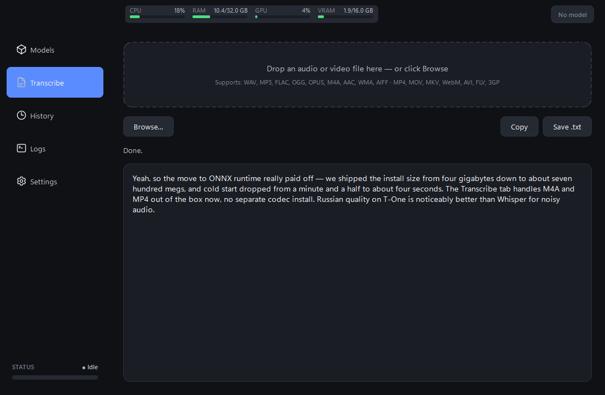

Audio stays on your machine
Recording, encoding, and inference all happen in-process. Model weights download once from Hugging Face and live in your local cache. The internet is never involved during transcription.
Lazy to Text records audio on a global keyboard shortcut, transcribes it locally through ONNX Runtime, and pastes the result into whatever window has focus. A second tab transcribes audio / video files — WAV, MP3, FLAC, OGG, M4A, MP4, MOV, MKV, WebM and friends. No cloud round-trip, no subscription, no telemetry.

Recording, encoding, and inference all happen in-process. Model weights download once from Hugging Face and live in your local cache. The internet is never involved during transcription.
After the first model download the app needs no network connection — useful for trains, planes, and locked-down enterprise laptops.
Single ONNX inference path — no PyTorch, no NeMo, no CTranslate2. The exe folder lands at ~700 MB instead of the 6–8 GB the multi-engine builds used to need.
Whisper, GigaAM v3, Parakeet TDT v3, Canary, T-One, Vosk RU
— all loaded by the same OnnxAsrBackend on
onnxruntime-gpu. Adding a tenth model is a
registry entry, not a new dependency tree.
Ctrl+F2 records, Ctrl+F3 stops + transcribes + pastes, Ctrl+F6 discards. Ctrl+1..5 jump between tabs. Every hotkey is remappable in Settings; edits persist on focus loss with no Save button.
Separate Transcribe tab accepts drag-drop or Browse.
soundfile handles WAV / FLAC / OGG / OPUS /
AIFF natively; bundled static ffmpeg covers
MP3 / M4A / AAC / WMA / MP4 / MOV / MKV / WebM / AVI /
FLV / 3GP. No system-wide ffmpeg install required.
GigaAM v3 (CTC + RNN-T, both with built-in punctuation), T-One (Conformer trained on 80k hours of speech, beats Whisper on telephony / noisy audio), Vosk RU (30 / 50 MB Zipformers for low-spec laptops), plus Parakeet and Canary for multilingual coverage that includes Russian.
Backend tries CUDA / TensorRT first; if no compatible NVIDIA driver is present, it silently retries on CPU and keeps running. Vosk and T-One are usable on CPU; the larger Whisper / Parakeet / Canary models benefit from a GPU but don't require one.
Each Whisper card surfaces an inline panel — language, VAD filter, beam size, temperature, initial prompt — persisted per alias and pushed live into the running backend. No restart needed. Parakeet / GigaAM / T-One / Vosk panels match their narrower API surface.
Topbar widget tracks CPU / RAM / GPU utilisation / VRAM in
real time via psutil + nvidia-ml-py.
Bars colour-code green / amber / red as load climbs. The
GPU bar hides gracefully on machines without an NVIDIA
driver.
A STATUS · Idle / Recording / Processing chip
in the sidebar's bottom-left corner mirrors the topbar
cards; the VU bar under it animates while recording, so
silent or muted mics show up immediately.
Mis-clicked a 1.6 GB model? A red Cancel pill appears next to the loading indicator. One click rolls back the active card / config / topbar pill — no waiting for the download to finish.
Settings → Storage shows the resolved models folder (overridable), total disk space used by the cache (computed asynchronously), and an Open-folder shortcut to inspect / clean the cache in Explorer.
Every transcription is persisted to
logs/transcription_history.json, displayed in
a filterable table with hover tooltip and detail dialog
on double-click. Export to plain text from the toolbar.
Records colour-coded by level + logger source, with a "Show network logs" toggle that hides httpx / huggingface_hub noise and a search field that filters the buffer on the fly.
Smooth-scroll animations and the live VU meter detect the primary monitor's refresh rate (60 / 144 / 240 Hz) and tick at native cadence. No more 60 Hz stutter on a 144 Hz display.
Close button minimises to the system tray instead of quitting. State-aware tray icon mirrors the recording pipeline. Right-click for Show / Quit; left-click restores the window.
A named-mutex check prevents a second copy from registering the same global hotkeys. The duplicate launch shows a branded warning and exits cleanly.




Every model is an ONNX export downloaded from Hugging Face on first use. Click Download on a card to fetch weights into the configured storage folder.
| Alias | HF repo | Size | Languages | Best for |
|---|---|---|---|---|
whisper-large-v3-turbo | onnx-community/whisper-large-v3-turbo | 1.6 GB | multilingual | universal pick |
whisper-large-v3 | onnx-community/whisper-large-v3 | 3.1 GB | multilingual | best raw quality |
gigaam-v3-ctc | istupakov/gigaam-v3-onnx | 260 MB | RU only | fast Russian dictation |
gigaam-v3-rnnt | istupakov/gigaam-v3-onnx | 290 MB | RU only | best Russian quality |
t-one | t-tech/T-one | 290 MB | RU only | noisy / telephony Russian |
vosk-ru-small | alphacep/vosk-model-small-ru | 30 MB | RU only | low-spec laptop CPU |
vosk-ru | alphacep/vosk-model-ru | 50 MB | RU only | balanced CPU choice |
parakeet-tdt-v3 | istupakov/parakeet-tdt-0.6b-v3-onnx | 1.2 GB | 25 langs incl. Russian | fastest multilingual |
canary-1b-v2 | istupakov/canary-1b-v2-onnx | 2.0 GB | 25 langs incl. Russian | short-utterance accuracy |
Requires Windows 10 / 11, Python 3.12, and a microphone. A CUDA-capable GPU is recommended for the larger models (Whisper Large, Parakeet, Canary). Vosk and T-One run comfortably on CPU.
git clone https://github.com/aa-blinov/lazy-to-text.git
cd lazy-to-text
uv sync # creates the venv from uv.lock
uv run lazy-to-text-ui # launch the appThe first launch leaves no model loaded — pick one from the Models tab and click Download. Press Ctrl+F2, speak, Ctrl+F3; the transcript pastes into the focused window. Or drop a file on the Transcribe tab to process audio / video from disk.
Done in the latest cycle: ONNX-only refactor (single inference
path, all backends collapsed onto onnx-asr);
Transcribe tab with drag-drop and bundled ffmpeg; T-One, Vosk
RU small / large, Canary 1B v2 added; Storage card with disk
usage + Open-folder; refresh-rate-aware smooth-scroll and VU
meter (60 / 144 / 240 Hz); cancel-load button; live resource
monitor; live VU meter; transcription confirmation toast;
searchable history with detail dialog; coloured logs view;
smooth pixel scrolling everywhere.